M11 Project
For this project, I made a json file called m11data.js with API data representing the roller coasters at a California amusement park called Knotts Berry Farm. I set up this small database myself so that the API is set up by creating a constant and assigning an array made of objects to it. The objects hold the properties for each roller coaster.
Next I made a script called m11app.js which creates a server to display the API data (roller coasters). I also made a map with the properties I wanted to use from that API. Then I added a few URL paths to send parameters through the URL. These parameters allow users to filter different coasters and information from the API.
Finally, I made a page called index.html which contains hyperlinks that work with the URL paths and parameters in m11app.js
For reference, the contents of m11data.js are pictured below.
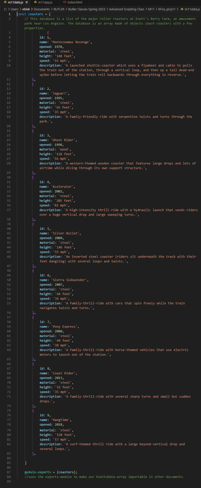Below is the script in m11app.js.
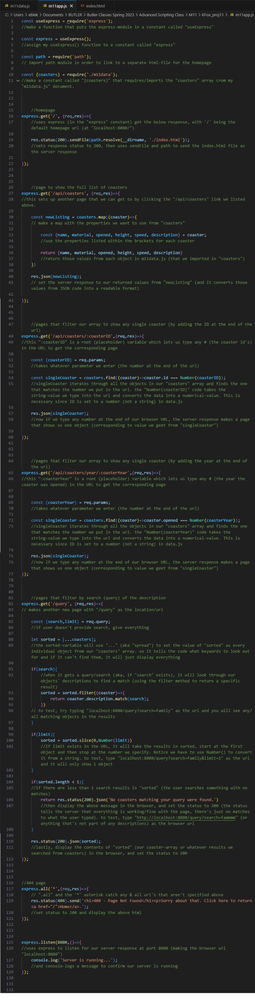Finally, here is the code for the home page in index.html.
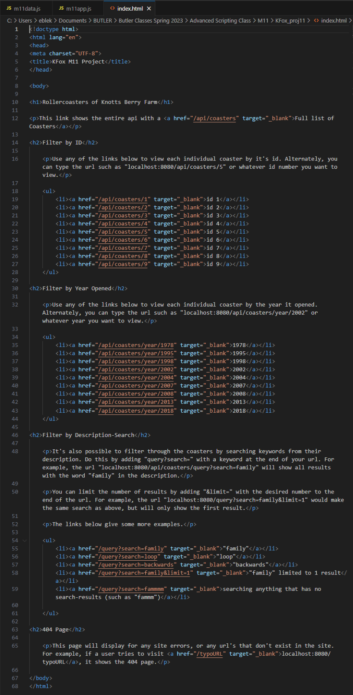To test the project, we can use the console to run m11app.js, which allows us to view the homepage in the browser at localhost:8080.
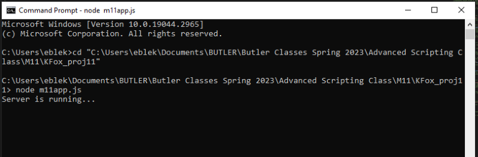 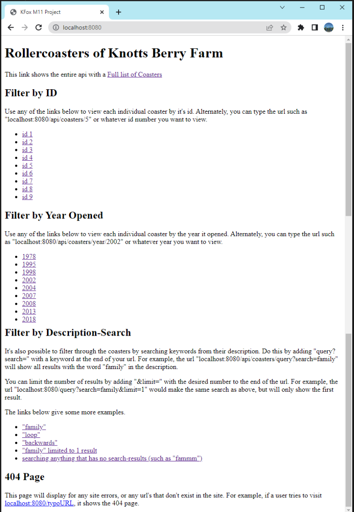Then we can test all the parameters by clicking various links on the homepage, or typing them directly in the URL.
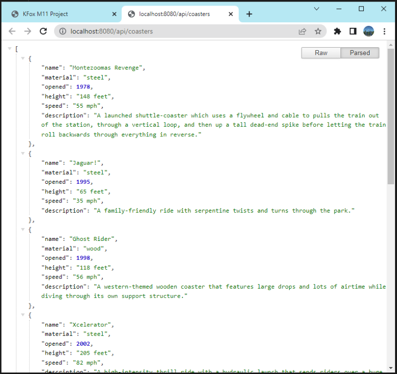 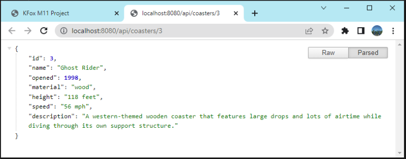 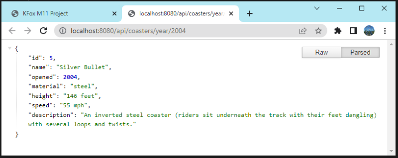 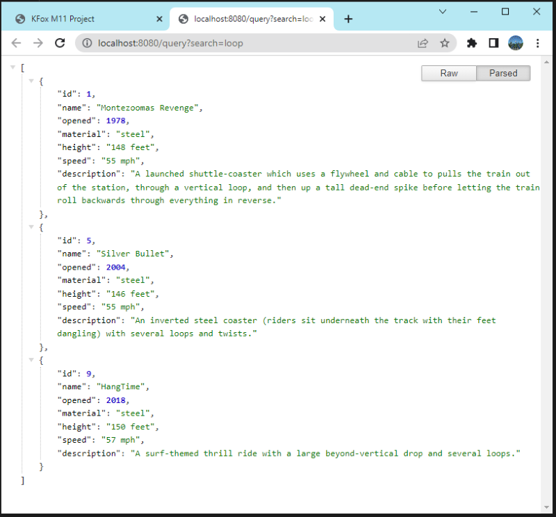 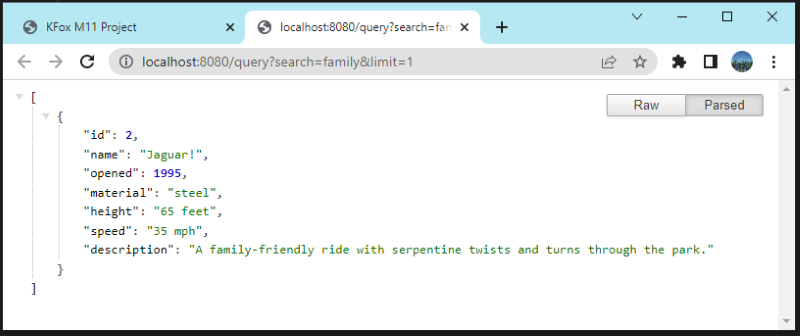 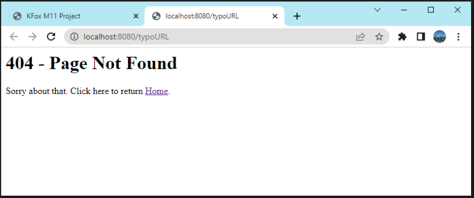